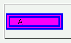

widthプロパティやheightプロパティを指定した要素では、二重線ボーダー（border-style: double;）の外側の線と内側の線の間の空白部が当該要素の背景で塗りつぶされない。
<p style="width:100px; border:9px double blue; background:fuchsia;">A</p>
A
ボーダー領域も背景プロパティの指定に従って背景を描画する対象になるはずです。
Mozilla1.0標準モード
WinIE6.0標準モード
WinIE6.0の標準モードと互換モードで不具合の発生を確認しました。